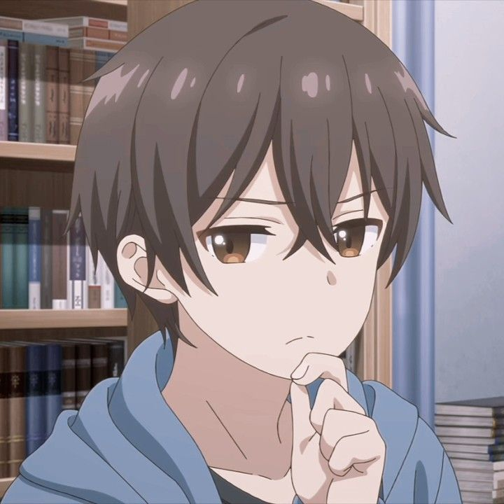

伊理戸水斗, Irido Mizuto
伊理戸結女, Irido Yume
南暁月, Minami Akatsuki
川波小暮, Kawanami Kogure
東頭いさな, Higashira Isana
伊理戸峰秋, Irido Mineaki

伊理戸由仁, Irido Yuni
種里円香, Tanesato Madoka
種里竹馬, Tanesato Chikuma
継母の連れ子が元カノだった 、継母の子は元カノだった』は、神城恭介作、たかやき作画のラブコメ・ライトノベル。 2018 年 12 月に Shoten's Kadokawa Sneaker Bunko のインプリント. ライトノベルは、J-Novel Club によって北米でデジタルライセンスされています. 日下部レイによるマンガの適応は、Dra Dra Sharp および Dra Dra の一部として、niconico Seiga Web サイトを介して、富士見書房によってオンラインで連載が開始されました。 2019年4月にフラットブランド化。2022年7月にProject No.9によるテレビアニメ化。
中学生の頃、みずとゆめはごく普通の夫婦だった。軽微な理由で浮気と叫び声の試合の合間に、2人の生徒は高校に入学するまで一緒にいましたが、最終的に解散することを決めました.彼らが知らないのは、運命には時々多くの驚きが待ち受けていること、そして彼らが義理の兄弟と姉妹として再会するのはわずか2週間後だということです.
確かに、それぞれの両親は再婚しようとしており、かつての恋人たちは毎日同じ屋根の下に住む必要があります.両親の幸せを邪魔しないために、彼らはどういうわけか状況を受け入れ、最初に魅力を感じた人が負けるという兄弟姉妹のルールを導入することにしました。
|  伊理戸水斗, Irido Mizuto |
伊理戸結女, Irido Yume |
南暁月, Minami Akatsuki |
川波小暮, Kawanami Kogure |
東頭いさな, Higashira Isana |
伊理戸峰秋, Irido Mineaki |
伊理戸由仁, Irido Yuni |
種里円香, Tanesato Madoka |
種里竹馬, Tanesato Chikuma |
ゆめとみずとの名は、それぞれ「油」（油の発音は日本語でゆ）と「水」（みずは日本語で水（水）を意味する）に由来する。イリド、アヤイ、ヒガシラ（直訳すると「東の頭」）の苗字は、コナン・ドイル（「イリド」はドイルの発音である「ドイル」のアナグラムに近い）、綾辻行人（「アヤ」という言葉のみ）に由来する。
作家の神城恭介は、ゆめとみずとの誕生日を11月3日と定めたが、それは11も3も素数であり「分ける」ことができないからである（日本語で「割る」は「割る」「分ける」を意味する）。
WEB連載以来、物語の舞台設定は曖昧でした。しかし、数年後、第8巻の物語の舞台が神戸であることから、神城は実際の場所である京都を舞台にすることにした。
ライトノベル
このシリーズは、2017年8月7日にオンライン小説ウェブサイトカクヨムで連載を開始し、印刷版は2018年12月1日に角川書店の角川スニーカー文庫のインプリントで出版を開始しました。このシリーズは、2022 年 7 月 1 日時点で 9 巻あります。このライトノベルは、J-Novel Club によって北米でデジタル ライセンスされています。
アニメシリーズのBlu-rayセットには、神城恭介が書き下ろした「継母の連れ子が今カノだった」というオリジナルのもしも物語が収録されている。ゆめとみずとが義理の姉弟になる前に別れなかったらどうなるかという話です。
2019年4月26日より、ドラドラシャープ、ドラドラフラットにて、草壁レイによる漫画がニコニコ生放送にて連載開始され、2022年5月9日現在、富士見書房にて4巻にまとめられている。
2021年7月21日にアニメ化が発表された。後に、Project No.9 によって制作されたテレビ シリーズであることが明らかになりました。監督はやなぎしんすけ、脚本は赤尾でこ、キャラクターデザインは佐藤克行、音楽は水谷ひろみが担当する。2022年7月6日、AT-X、TOKYO MX、BS日テレ、MBS、BSフジにて初放送。オープニング主題歌はDialogue+の「デネブとスピカ」（デネブとスピカ）、エンディング主題歌はハーモエの「ふたりピノキオ」（ふたりピノキオ）。 Crunchyroll はシリーズのライセンスを取得しています。